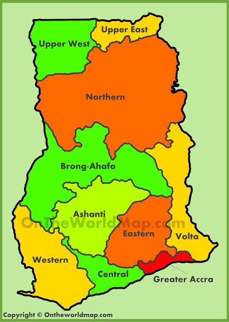
Geography helps students understand the Earth, the relationship between people and place, and the ways natural and human systems shape our world.
Geography is the study of the physical features of the Earth and how human activities interact with those features. It answers questions about where places are, why they are there, and how people adapt to and change their environment. Geography combines science, social studies, and environmental awareness to explain the patterns we see in nature and society.
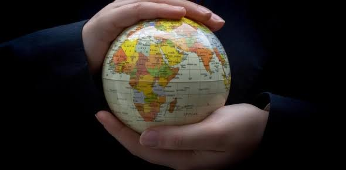
Geographers study landforms, climate, soils, vegetation, population, urbanisation, industry, and transport. They compare different regions and use maps, models, and data to understand spatial relationships. Geography encourages students to think globally and act locally by seeing the connections between their community and the wider planet.
Geography connects people and places, showing how our world is shaped by both nature and human choice.
Physical geography examines natural features and processes that shape the Earth. This includes landforms like mountains, valleys, plateaus, and coastal features, as well as processes such as erosion, weathering, and deposition. Understanding physical geography helps us predict natural hazards and manage land resources wisely.
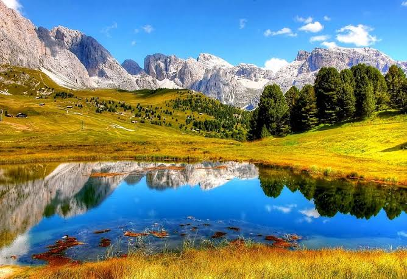
Rivers carve valleys, glaciers shape mountains, and winds move sand to create dunes. Soil types, rock formations, and natural vegetation all depend on the physical geography of a region. Students learn how these elements influence agriculture, settlement, and transportation.
Physical geography reveals the forces that shape land and water, giving meaning to the Earth’s surface patterns.
Landforms are natural features on the Earth’s surface, including hills, mountains, plains, plateaus, and basins. Relief refers to the difference in height between the highest and lowest points in an area. High relief areas often feature steep slopes and dramatic scenery, while low relief areas are flatter and easier for farming and settlement.
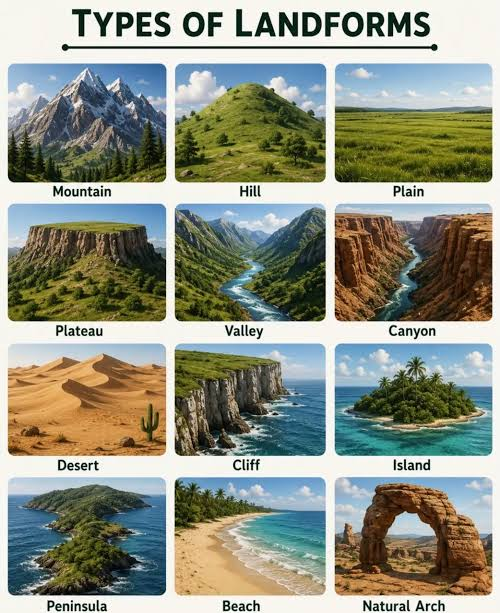
Students classify landforms by their formation process, such as volcanic, fluvial, tectonic, and erosional. Rivers create valleys, plates collide to form mountains, and coastal waves shape cliffs and beaches. Relief influences climate and soil development, making it a key factor in land use decisions.
The shape of the land determines water flow, weather patterns, and the places where people build their homes.
Climate refers to long-term weather patterns in a region, while weather is the daily condition of the atmosphere. Climate is influenced by latitude, altitude, prevailing winds, ocean currents, and distance from the sea. Different climates support different types of vegetation, agriculture, and human activities.
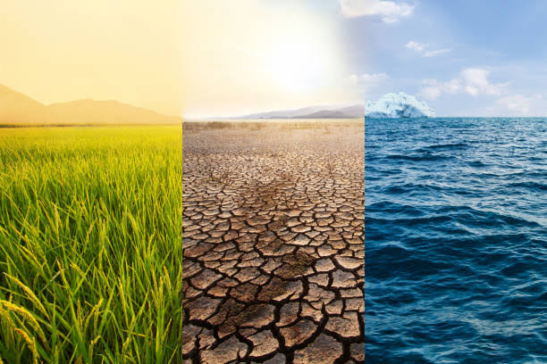
Climate zones include tropical, temperate, arid, and polar regions. In Ghana, the climate is generally tropical with wet and dry seasons. Understanding climate helps students predict rainfall, crop suitability, and how people adapt to extreme conditions like drought or flooding.
Weather changes each day, but climate is the long-term story that shapes life in every region.
Water resources include rivers, lakes, groundwater, and oceans. Freshwater is essential for drinking, farming, industry, and ecosystems. Geographers study water availability, quality, and use, as well as the challenges of managing limited water supplies in dry regions.
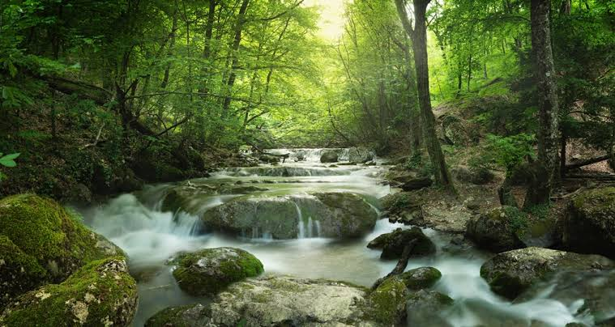
Rivers like the Volta and coastal lagoons are vital water sources in Ghana. Water resources are studied in terms of their distribution, seasonal changes, and the ways people collect, store, and use water. Students also examine the impact of pollution, deforestation, and climate change on water supplies.
Water is the most precious resource on Earth, and geography helps us understand how to share it fairly and sustainably.
Human geography explores how people live, work, and organise space. It examines population trends, settlement patterns, economic activities, culture, and the relationships between people and their environment. Human geography links social systems to physical places and shows how people shape the world around them.
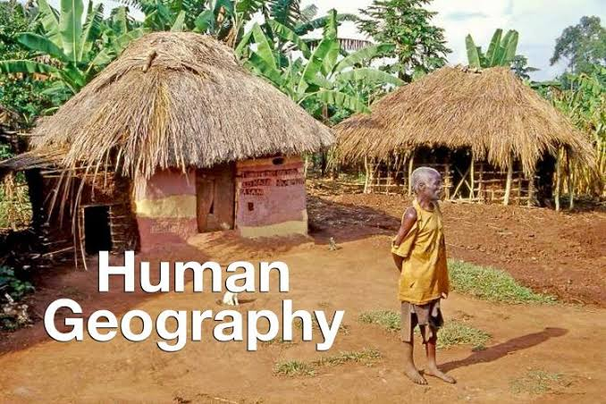
Topics include migration, urban growth, land use, and the way economic activities depend on transport, resources, and markets. Human geography also studies how different groups experience space and place, including the contrast between rural villages and busy cities.
how people adapt to extreme conditions like drought or flooding.Human geography explains how people use space and how locations influence culture, economy, and community.
Population geography analyses the size, structure, and distribution of people. Settlement geography studies where people choose to live and why. Patterns include dispersed rural settlements, clustered villages, and dense urban neighbourhoods. Demographic factors such as birth rate, death rate, and migration shape population change.
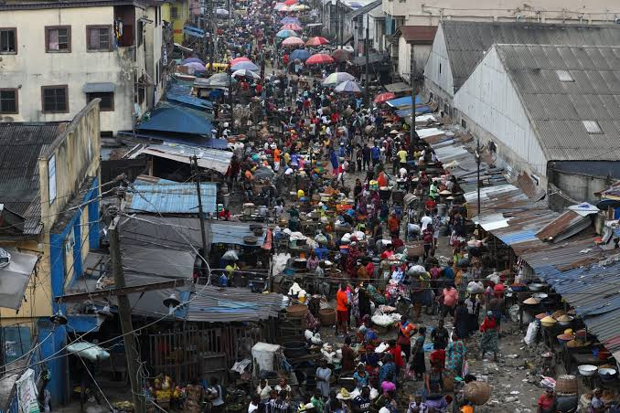
Students calculate population growth, examine reasons for movement to cities, and analyse why some locations attract large settlements. Population pressures affect land use, services, and the environment, making this a central topic in geography.
Where people live and in what numbers reveals the needs, challenges, and opportunities of a region.
Economic geography examines how people earn a living through primary, secondary, tertiary, and quaternary activities. Primary activities include farming, fishing, and mining. Secondary activities transform raw materials into goods. Tertiary activities provide services, while quaternary activities involve knowledge, research, and information.
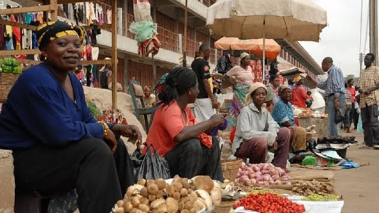
Students learn why some regions specialise in agriculture while others become industrial or service centres. Geography helps explain trade patterns, resource distribution, and how infrastructure influences economic development.
Economic geography shows how natural resources, location, and human skills combine to shape livelihoods.
Urbanisation is the process by which people move to cities and towns. It creates opportunities for jobs, education, and services, but it also brings challenges such as overcrowding, pollution, congestion, and housing shortages. Geography examines how urban areas grow and how planners can make cities more livable.
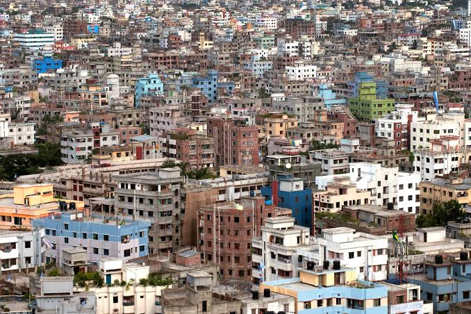
Geographers study city models, land use zones, urban transport, and the ways cities expand. They compare planned towns with informal settlements and explore solutions for housing, sanitation, and sustainable city growth.
Urbanisation turns the countryside into vibrant city life, but it must be managed to avoid chaos and inequality.
Environmental geography focuses on how people use natural resources and how environmental changes affect life on Earth. It covers deforestation, desertification, pollution, climate change, and conservation. Geography teaches students about sustainable practices that protect ecosystems while supporting human needs.
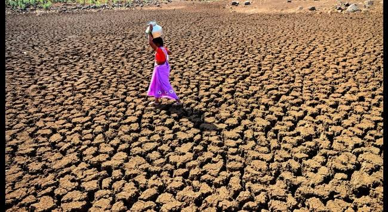
Students learn about soil conservation, forest protection, water management, and renewable energy. They also examine the impact of human activities on biodiversity and climate, and the importance of policies that reduce environmental harm.
Environmental geography reminds us that people and nature are connected, and that healthy ecosystems support healthy societies.
Map skills are essential in geography. Students learn to read maps, use scales, interpret symbols, and understand directions. Tools like atlases, globes, GIS (Geographic Information Systems), and satellite images help geographers analyse spatial information and make better decisions about land use and resources.
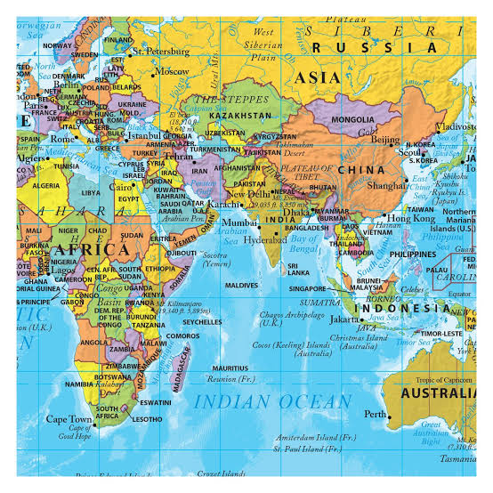
Geographers use compass bearings, map scales, contour lines, and grid references to locate features and measure distances. They also use data visualisation to compare regions and reveal trends in population, land use, and climate.
Maps are geography’s most powerful tools, turning locations into stories of place and pattern.
Ghana’s geography includes coastal plains, forested hills, and northern savannah. It lies near the equator and experiences tropical weather with wet and dry seasons. Ghana’s natural resources include gold, timber, cocoa, and fishing grounds, which shape its economy and settlement patterns.
Geographers study Ghana’s regional differences, from coastal lagoons and fishing communities to forest farms and northern grain zones. They also examine issues like urban growth in Accra, land use change, and the impact of climate variability on water and agriculture.
Ghana’s geography combines coastline, forest, and savannah to create a rich mix of environments and human livelihoods.